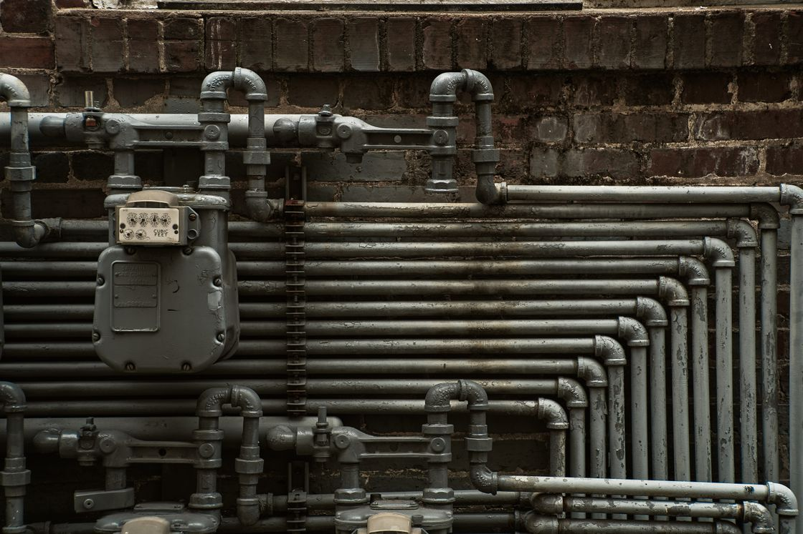

01
Agua
Desde la canilla que gotea hasta la instalación completa de la casa nueva.
- Detección de fugas sin romper de más
- Reparación y cambio de cañerías
- Tanques, bombas y presurizadores
- Canillas, flexibles y mochilas
- Instalación completa de obra nueva